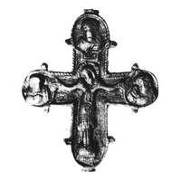
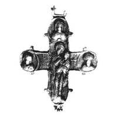

Catalog › CE-0730 · KOR2003-II.1.1.110
Encolpion cu două valve, capete cu „lacrimi”, Răstignire cu monograma IX în tăbliță, Maica Domnului cu Pruncul
sec. sfârșit XII–XIII (1101–1300) · Sevastopol (Chersonesos), Crimeea, Ucraina · Rezervația Națională „Chersonesos Tauric” (NZHT), Sevastopol, inv. 111/37148
double-sided reliquary cross (enkolpion), aramă; c. sfârșit XII–XIII (1101–1300); found at Sevastopol (Chersonesos), Crimeea, Ucraina; kept at Rezervația Națională „Chersonesos Tauric” (NZHT), Sevastopol.




Identificare
- Categorie
- Encolpion bivalv (relicvar)
- Material
- Aramă
- Tehnică
- Turnare în relief
- Dimensiuni
- Î 80 × L 70 mm
Iconografie
- Avers
- Neidentificat
- Descriere avers
- Valva de față: în centru imaginea Răstignirii; deasupra capului lui Hristos, în tăbliță, monograma IX; pe capetele de sus și laterale, în medalioane, imagini bust de sfinți. Imaginile sunt în relief; cutele maforionului Maicii Domnului și nimbul lui Hristos sunt ornamentate cu crestături oblice, contururile valvelor și ale medalioanelor sunt subliniate cu o bordură îngustă în relief cu crestături oblice păstrate în unele locuri.
- Revers
- Maica Domnului cu Pruncul; Neidentificat
- Descriere revers
- Valva de revers: în centru Maica Domnului cu Pruncul; pe capătul de sus și pe cel lateral, în medalioane, imagini bust de sfinți. Imaginile sunt neclare, topite; pe suprafețele interioare ale valvelor sunt adâncituri care repetă imaginile exterioare. Inelul de agățare și balamalele valvei de revers pierdute.
- Inscripții
- IX (monogramă în tăbliță)
Datare și atribuire
- Datare
- sec. sfârșit XII–XIII (1101–1300)
- Centru
- Necunoscut
- Tipologie
- Korzukhina–Peskova 2003, tip II 1 1
Descoperire
- Localitate
- Sevastopol (Chersonesos)
- Regiune
- Crimeea
- Țară
- Ucraina
- Context
- Așezare
- Anul
- 1988
Păstrare și referințe
- Colecție
- Rezervația Națională „Chersonesos Tauric” (NZHT), Sevastopol
- Nr. inventar
- 111/37148
- Bibliografie
- G. F. Korzukhina, A. A. Peskova, Древнерусские энколпионы. Нагрудные кресты-реликварии XI–XIII вв., Sankt-Petersburg, 2003 [Korzukhina–Peskova 2003], p. 73, cat. nr. II 1 1/110, reprodusă la Табл. 28 (planșe, p. 270). Bibliografie citată în sursă: Голофаст, Романчук, Рыжов 1991 201 № 215.
- Figura
- Табл. 28
- Planșe
- Korzukhina–Peskova 2003, Табл. 28 (planșă fără paginație proprie în PDF; p. 270 tipărită)
- Observații
- Datare după Peskova: sec. sfârșit XII–XIII. Circumstanțe: Săpături S. G. Rîjov, 1988; cartierul de nord, cartierul XA, stratul de incendiu din sec. XIII. Datarea și dimensiunile sunt indicate de redacție (— Ред.). Alte inscripții în afara monogramei nu se citesc; se vede doar o linie despărțitoare orizontală adâncită de o parte și de alta a Maicii Domnului. Coordonate: nu sunt date în sursă.
Citare: Corpus Encolpiorum, CE-0730, Encolpion cu două valve, capete cu „lacrimi”, Răstignire cu monograma IX în tăbliță, Maica Domnului cu Pruncul, --root/piese/KOR2003-II.1.1.110/ (accesat 2026-10-20).